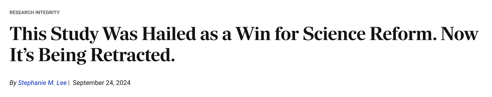

Pearson's Chi-squared test with Yates' continuity correction
data: M
X-squared = 4.9, df = 1, p-value = 0.02686Priming effect: Replication study
2024-09-25 Wed
Rick Gilmore
Prelude
Lakatos on science and pseudoscience
http://richmedia.lse.ac.uk/philosophy/2002_LakatosScienceAndPseudoscience128.mp3
Overview
Announcements
- due this Friday, September 27
Retraction in the news
Lee (2024)
Protzko et al. (2023)
Last time…
- Bargh, Chen, & Burrows (1996) on priming and the automaticity of behavior
- “Priming” refers to what?
- What was primed (e.g., manipulated) and how?
- “Automaticity of behavior” refers to what?
- What behavior was measured and how?
- “Priming” refers to what?
Today
Replication failure: Priming effect
Replication
Doyen, S., Klein, O., Pichon, C.-L. & Cleeremans, A. (2012). Behavioral priming: {I}t’s all in the mind, but whose mind? PLoS One, 7(1), e29081. https://doi.org/10.1371/journal.pone.0029081
Access
- Full (HTML/PDF) access available to public 1.
Abstract
The perspective that behavior is often driven by unconscious determinants has become widespread in social psychology. Bargh, Chen, and Burrows’ (1996) famous study, in which participants unwittingly exposed to the stereotype of age walked slower when exiting the laboratory, was instrumental in defining this perspective. Here, we present two experiments aimed at replicating the original study.
Despite the use of automated timing methods and a larger sample, our first experiment failed to show priming. Our second experiment was aimed at manipulating the beliefs of the experimenters: Half were led to think that participants would walk slower when primed congruently, and the other half was led to expect the opposite. Strikingly, we obtained a walking speed effect, but only when experimenters believed participants would indeed walk slower.
This suggests that both priming and experimenters’ expectations are instrumental in explaining the walking speed effect. Further, debriefing was suggestive of awareness of the primes. We conclude that unconscious behavioral priming is real, while real, involves mechanisms different from those typically assumed to cause the effect.
Experiment 1 Methods
- Empirical replication of one study from (Bargh et al., 1996).
- 120 undergrads in Brussels, Belgium.
- Two priming conditions
- Full list of words: https://doi.org/10.1371/journal.pone.0029081.s001
Before reaching the exit, participants were called back by the experimenter who pretended that he/she had forgotten to administer a final task. The debriefing that followed relied on a funnel questionnaire [1], [18] assessing participants’ awareness of the manipulation on three levels:
1-Awareness of the prime was assessed by asking participants increasingly specific questions about the presence of primes in the scrambled sentences. One particular question was a four-alternative forced-choice task (4-AFC) in which participants were required to choose between four pictures representing four social categories that could have been used as primes (i.e.: athletic person, Arabic person, handicapped person and elderly).
2-Awareness of the primed behavior was assessed by inviting participants to indicate how much they thought their walking speed had increased or decreased relative to their regular walking speed (responses were provided using an on-screen slider along a scale ranging from 0 to 100, with 50 representing their regular walking speed).
3-Awareness of the link between the prime and the primed behavior was assessed directly by asking participants whether they had noticed any link between the scrambled sentences task and their walking speed as they had left the room.
The debriefing was also used to probe suspicion regarding the purpose of the experiment by asking increasingly accurate questions such as: “Do you think this experiment is related to any topic in particular?”, “Do you think this experiment could be related with manipulating behavior?”.
Experiment 1 Results
Walking speed: In this analysis, we used participants’ walking speed as they entered the experiment room, (i.e., before priming) as a covariate. The results show no significant difference between the Prime (M=6.27 SD=2.15) and the No-Prime group (M=6.39 SD=1.11) in the time necessary to walk along the hallway after the priming manipulation (F (1, 119)<1, \(\eta^2\)=.01).
Figure 1: Plot of data from Experiment 1 in Doyen et al. (2012). Not in original paper.
Awareness of the prime. No participant reported having noticed anything unusual about the scrambled sentences task. Four participants (6.66%) in the Prime condition reported that the sentences were related to the stereotype of old persons.
We tested the distribution of forced choices for both conditions using a two independent sample chi-squared test: the Prime group chose the picture of the old person above chance level whereas the No prime group was equally likely to choose all four pictures (\(\chi^2(1)=5.43\), \(p=0.023\)).
Important
What does the chi-squared (\(\chi^2\)) test test?
A: Deviations from chance for events that have a discrete outcome, e.g., flipping a coin.
Is a coin that comes up tails 14 times out of 20 flips a fair coin?
Hmmm, probably not, since \(\chi^2(1,N=20)=4.9, p=0.03\), meaning that the observed result (14 tails/20 flips) is unlikely given a fair coin with \(p(tails)=.5\).
Awareness of the effect. We computed the deviation of the slider from the initial position. No significant difference was found between the Prime (M=1.7) and the No-Prime (M=2.68) groups (t(1, 119)<1, d=0.022).
Important
What does the \(d\) mean?
A: It is an effect size, here the observed difference between the means of the two conditions in standard deviation units so that we may compare across studies. A \(d=.022\) is considered a very, very small effect. We will complete an exercise about effect sizes, sample sizes, and statistical power later in the course.
Note: The \(\eta^2\) (eta-squared) value mentioned earlier is also an effect size.
Awareness of the link. 96% of participants reported that they could not establish a link between the scrambled sentences task and their subsequent behavior. No experimenter reported having entertained any specific expectation about participants’ behavior.
(Doyen et al., 2012 Experiment 2)
…experimenters’ expectations could act as an amplifier of the effect of the prime and thus promote the primed behavior.
To test these possibilities, we conducted a second experiment in which we manipulated the experimenters’ expectations about primed participants’ behavior.
- 50 new participants
Experimenters’ expectations. Experimenters’ expectations about primed participants’ behavior were manipulated. One half of the experimenters were told that the primed participant would walk slower as result of the prime (i.e.: “Slow” condition), the other half were told that the participants would walk faster (i.e.: “Fast” condition). Each individual experimenter tested 5 participants randomly assigned to the Prime or the No-Prime condition.
Experimenters’ expectations were shaped through a one hour briefing and persuasion session prior to the first participant’s session. In addition, the first participant whom an experimenter tested was a confederate who had been covertly instructed to act in the manner expected expected by the experimenter. Crucially, participants’ condition (i.e.: Prime or No-Prime) was made salient to the experimenter.
Figure 1 from Doyen et al. (2012)
Figure 2 from Doyen et al. (2012)
Figure 3 from Doyen et al. (2012)
Discussion from Doyen et al. (2012)
First, in Experiment 1, despite the use of a larger sample and an experimental procedure devoid of the limitations present in the original experiment, we were not able to replicate Bargh et al’s [1] automatic effect of priming on walking speed. This led us to assume that crucial factors in this paradigm had remained unidentified. Experiment 2 was aimed at exploring such factors.
Second, in Experiment 2 we were indeed able to obtain the priming effect on walking speed for both subjective and objective timings. Crucially however, this was only possible by manipulating experimenters’ expectations in such a way that they would expect primed participants to walk slower.
Our results, however, cannot be explained solely in terms of a pure self-fulfilling prophecy effect [14], as the primed participants did not walk faster when tested by an experimenter who believed they would walk faster.
Therefore it seems that the primes alone are not sufficient and must be in line with environmental cues such as the experimenters’ behavior in order to elicit the effect on walking speed. This is also supported by the fact that contrary factors (i.e.: primes related to the concept of age in conjunction with an experimenter expecting to observer a faster walking speed) did not alter participants’ walking speed.
Regarding the subjective timings, we obtained a reverse effect on walking speed (i.e.: participants walking faster). This effect can be explained by the error committed by the experimenters, most likely as a result of their induced expectations. If we had used only human-operated measurement devices, as in Bargh et al.’s [1] experiment 2a and 2b, we would thus have erroneously concluded in a reverse priming effect.
This very important point suggests that one must be cautious about (1) the type of measurement used in behavioral priming experiments as well as (2) the experimenters expectations. Subtle differences are particularly prone to external influences and potential biases.
Third, most of the participants primed with the scrambled sentences task were aware of the social category they had been primed with. This result shows that one must be cautious when using the scrambled sentences task as a priming method.
One must take into account that our participants were performing the experiment as part of a psychology course, which could have led to higher suspicion towards the scrambled sentences task resulting in a higher degree of awareness of the primes.
Additionally, those participants who actually exhibited a slower walking speed reported in good proportion being aware of that particular behavior. Whether automatic behavioral priming can occur without awareness thus remains unclear. As a matter of fact, participants’ awareness of the prime and of the primed behavior could have led them to exert better conscious control over the latter and therefore impair its expression.
Open Science Notes
Coming up: Students’ choice on Monday, September 30
- Read a successful replication study: (Soto, 2019)
- Deep dive into how the Survey-01 and Survey-02 code actually works.
- Explore some large-scale databases of replication studies in Psychology: (Röseler et al., 2024) and https://forrt.org/reversals/
- Discuss norms and counternorms in science vs. other fields based on your own responses to Exercise 03
- Explore Protzko et al. (2023) retraction.
Next time
Work session: Scientific integrity & Final Project Proposals
- Assignment
- Exercise 04: Violations of scientific integrity, due Friday, October 4
- Final project proposals, due Friday, October 18.
- Due this Friday
- Class notes
Resources
References

Bargh, J. A., Chen, M., & Burrows, L. (1996). Automaticity of social behavior: Direct effects of trait construct and stereotype-activation on action. Journal of Personality and Social Psychology, 71(2), 230–244. https://doi.org/10.1037//0022-3514.71.2.230
Doyen, S., Klein, O., Pichon, C.-L., & Cleeremans, A. (2012). Behavioral priming: It’s all in the mind, but whose mind? PloS One, 7(1), e29081. https://doi.org/10.1371/journal.pone.0029081
Lee, S. M. (2024). This study was hailed as a win for science reform. Now it’s being retracted. The Chronicle of Higher Education. Retrieved from https://www.chronicle.com/article/this-study-was-hailed-as-a-win-for-science-reform-now-its-being-retracted
Protzko, J., Krosnick, J., Nelson, L., Nosek, B. A., Axt, J., Berent, M., … Schooler, J. W. (2023). High replicability of newly discovered social-behavioural findings is achievable. Nature Human Behaviour. https://doi.org/10.1038/s41562-023-01749-9
Roberts, B. (2014, September). Science and pseudoscience overview and transcript. https://www.lse.ac.uk/philosophy/science-and-pseudoscience-overview-and-transcript/.
Röseler, L., Kaiser, L., Doetsch, C., Klett, N., Seida, C., Schütz, A., … Zhang, Y. (2024). The replication database: Documenting the replicability of psychological science. Journal of Open Psychology Data, 12(1), 8. https://doi.org/10.5334/jopd.101
Soto, C. J. (2019). How replicable are links between personality traits and consequential life outcomes? The life outcomes of personality replication project. Psychological Science, 30(5), 711–727. https://doi.org/10.1177/0956797619831612